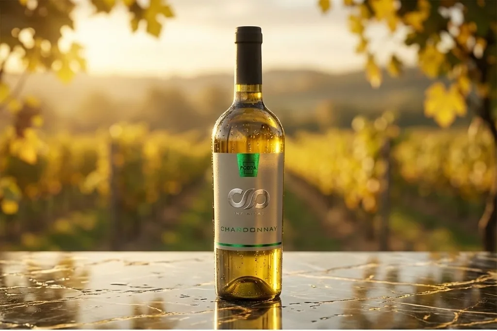
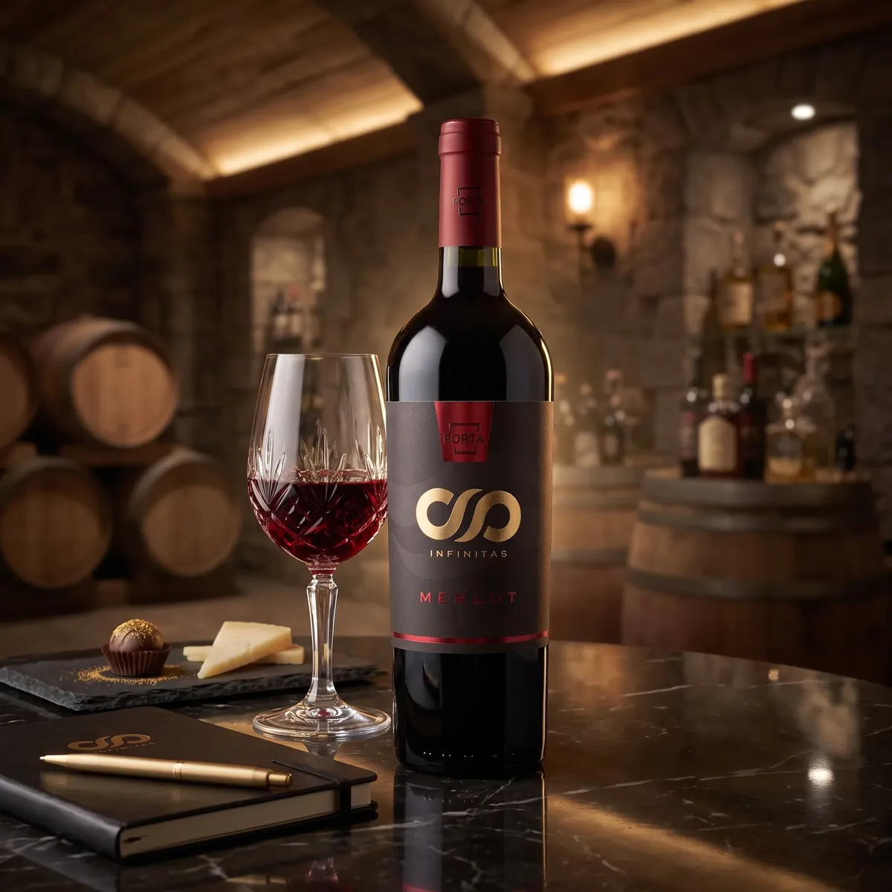
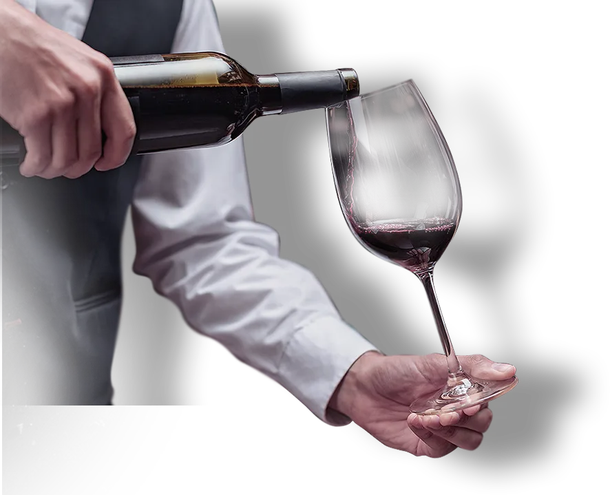

Iz srca Negotinske Krajine, gde se tradicija i kvalitet sreću.

Poreklo
Negotinska krajina jedan je od najstarijih vinogradarskih krajeva na Balkanu. Arheološki nalazi iz rimskog perioda svedoče da se vinova loza na ovim prisojnim brdima gaji vekovima, a klima i sastav zemljišta i danas se smatraju izuzetno pogodnim za vrhunska vina.
Na temeljima tog nasleđa, pre 15 godina smo krenuli u obnovu zapuštenih vinograda i izgradnju modernog podruma u selu Rečka — nastavljajući put podruma kuće Damnjanović, koji su generacijama čuvali znanje o preradi grožđa u ovom kraju.
Podrum
Danas gajimo grožđe na 8 i više hektara sopstvenih vinograda, birajući sorte koje najbolje odgovaraju terroir-u Negotinske krajine — Cabernet Sauvignon, Merlot, Chardonnay i Sauvignon Blanc. Grožđe se bere ručno, a vinifikacija se odvija u modernom podrumu koji kombinuje savremenu opremu sa tradicionalnim metodama odležavanja.
Svake godine proizvedemo oko 30.000 boca vina, od kojih je svaka rezultat pažljivog rada u vinogradu i podrumu, kao i strpljenja koje zahteva dobro vino.

Poseta podrumu
Rado ćemo vas provesti kroz naš podrum i ispričati priču o vinima Vinarije Porta. Najavite dolazak putem kontakt stranice ili telefona.
Kontaktirajte nas
Prihvatite šta vaš život ima da vam ponudi i pokušajte da pijete iz svake čaše.